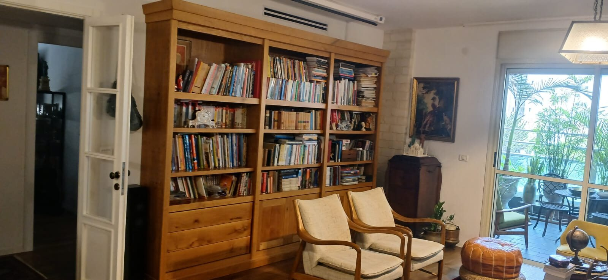
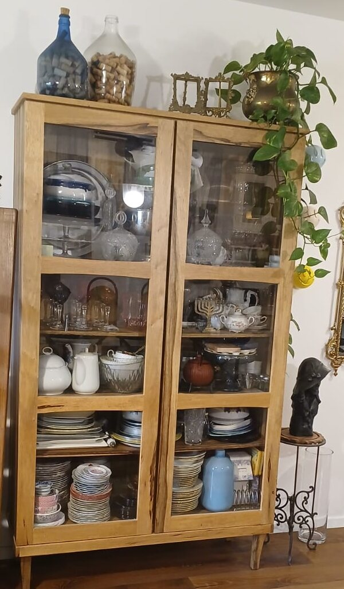
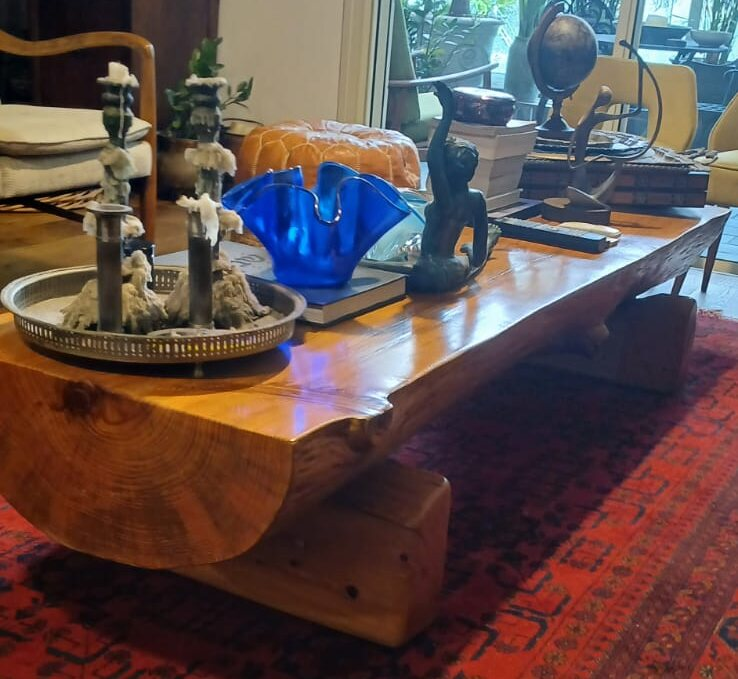
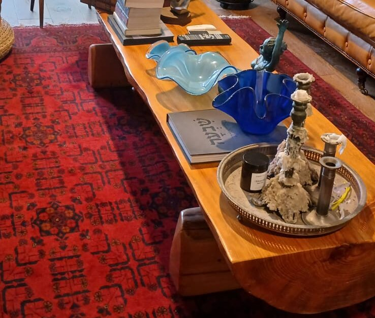
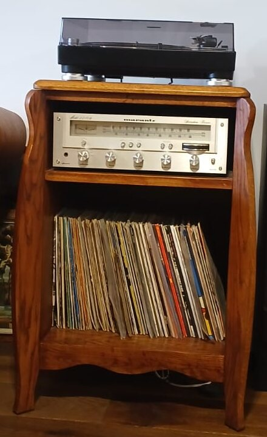
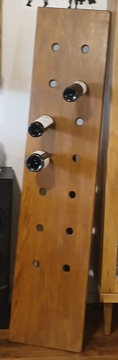
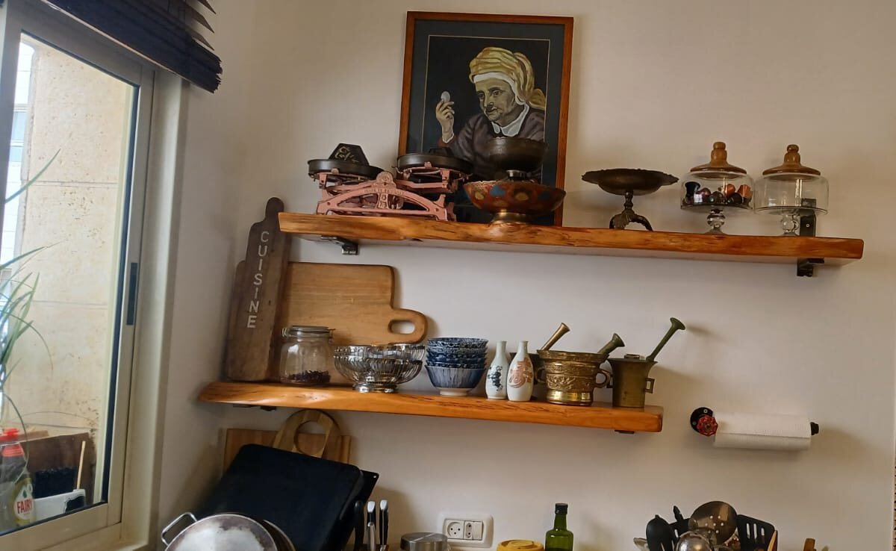
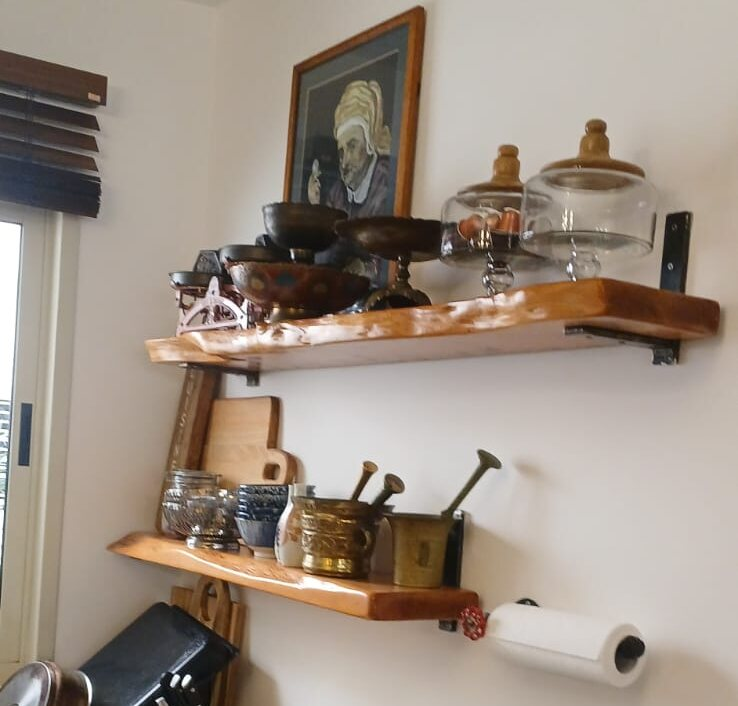
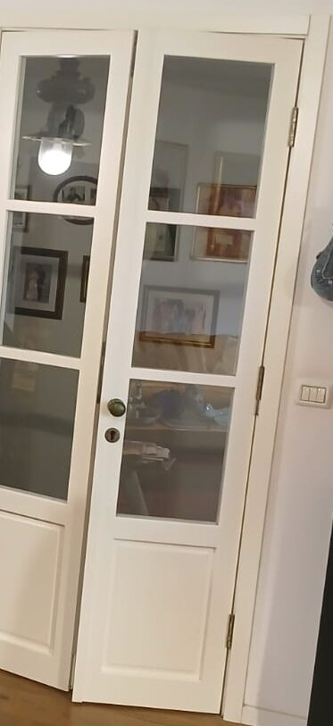

לצד עבודתי בתחום הרפואה המשלימה, אני ממשיך לטפח אהבה ותיקה נוספת שלי – יצירת עבודות נגרות עם נשמה ואופי. בסדנה שלי באבירים שבגליל אני יוצר רהיטים ועבודות עץ מיוחדות עבור אנשים מכל רחבי הארץ, שמעריכים עבודת יד, איכות ותשומת לב לפרטים הקטנים. את העבודות אני יוצר בזמני הפנוי, בקצב שלי, בלי לחץ ובלי קיצורי דרך, מתוך הנאה מהתהליך ומהיצירה עצמה. לכן, אם אתם מחפשים משהו מיוחד, שנעשה באהבה ובסבלנות, ולא ממהרים לקבל אותו – אשמח ליצור אותו עבורכם.
העבודות שלי
ספריית עץ מלא לסלון
בנוי מעץ אלון אירופאי

ויטרינת עץ וזכוכית
בנוי מעץ אגוז אפריקאי
דלתות זכוכית במסגרת עץ שמבליטה את היופי הטבעי של העץ

שולחן סלון מעץ מלא
בנוי מעץ אורן ישראלי
חצי גזע עץ, ששומר על המראה הטבעי שלו


ארונית לפטיפון
בנוי מעץ מהגוני
קווים מעוגלים, מקום למגבר ולאוסף התקליטים

מתקן לבקבוקי יין
בנוי מעץ אלון אירופאי
לוח עץ נשען על רגל, פשוט ומיוחד
צולם בסדנה באבירים

מדפי עץ למטבח
בנוי מעץ אורן ישראלי
שני מדפים עם קצה טבעי


דלתות עץ מלא בצבע לבן
בנוי מעץ בוק אירופאי

רוצים להכיר גם את העבודה שלי ברפואה משלימה? לאתר
רוצים רהיט שנבנה במיוחד בשבילכם? שלחו לי הודעה.
דברו איתי בוואטסאפ